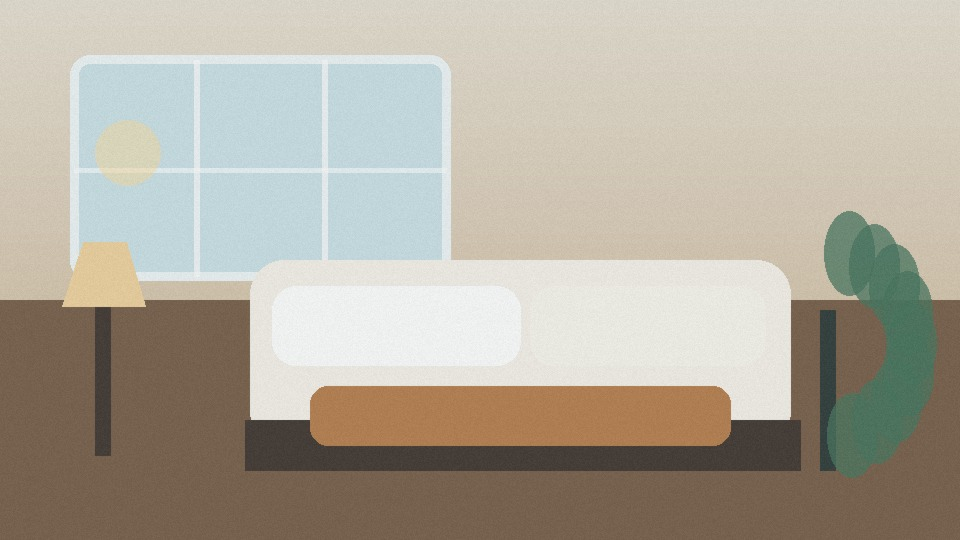

云栖酒店集团 / 西湖店 / 渲染中心
⌕ 搜索项目或任务编号…
RENDER & DELIVERY
渲染与交付
查看渲染进度、质量检查、交付文件与每一次尝试的完整日志。
当前任务
任务 ID R-260804-0182 · 开始于 14:08:24
↻
暑期亲子房套餐推广 · V3
项目修订 18 · 1080 × 1920 · 30 fps · 预计 27 秒
约 01:42
预计剩余时间
✓ 媒体标准化视频、音频和字体已准备
✓ 时间线合成11 个镜头与字幕已编译
● Remotion 渲染当前帧 586 / 812
04 质量检查黑帧、静音、安全区等 11 项
渲染过程中可离开此页面，任务将在后台继续。
最近完成的交付
早餐权益推广 · 竖版 · 2026-08-04 12:46

住西湖边，早餐与风景都不将就00:24 · 1080 × 1920交付文件
所有下载地址均为短效链接，过期后可重新生成。
▶
最终视频 MP4H.264 · 42.8 MB
↓
T
字幕文件 SRT简体中文 · 4.2 KB
↓
▧
封面图片JPG · 1080×1920
↓
{ }
项目 JSONschema v1.0.0
↓
≣
媒体使用清单镜头、区间与来源
↓
✦
生成解释日志候选评分与选择原因
↓
✓
质量检查报告11 项检查 · 94 分
↓
▤
媒体 ManifestSHA-256 与版本信息
↓
尝试记录
每次重试保留独立状态，不会改动源项目
| 尝试 | 开始时间 | 耗时 | 管线版本 | 结果 | 操作 |
|---|---|---|---|---|---|
| #03 | 08-04 12:44:07 | 01:58 | m6-v1 | 成功 | 查看产物 |
| #02 | 08-04 12:38:12 | 00:42 | m6-v1 | 失败 | 查看错误 |
| #01 | 08-04 12:31:40 | 01:47 | m6-v1 | 已取消 | 查看日志 |
12:44:07 render accepted revision=17 pipeline=m6-v1
12:44:19 media normalized assets=9 warnings=0
12:45:42 composition rendered frames=724 fps=30
12:45:57 quality gate passed checks=11 score=94
12:46:05 artifacts published count=8 status=success
12:44:19 media normalized assets=9 warnings=0
12:45:42 composition rendered frames=724 fps=30
12:45:57 quality gate passed checks=11 score=94
12:46:05 artifacts published count=8 status=success